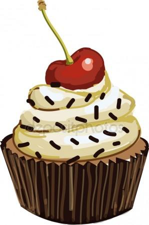
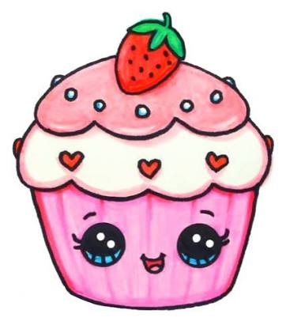
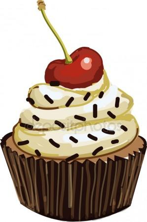
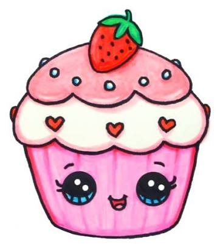

Ваш любимый ресторан The BestRest
Всего 10 мин езды от центра Киева и вы уже в прекрасном месте, лишенном суеты, наполненном красотой и спокойствием. В этом океане свежести и простора, среди многолетних деревьев, на берегу живописного озера, расположился величественный ресторан Exclusive. Здесь вы вдруг понимаете, что начали дышать по-настоящему. Его массивные колонны внушают уважение и создают ощущение защищенности и умиротворения. Внутри — множество залов, подходящих под любое настроение. Уютная и, в то же время, просторная Веранда согреет вас, оставив ощущение, обеда на лоне природы. Большой колонный зал второго этажа, который выполнен в аристократическом стиле, создаст атмосферу изысканности. Многочисленные комнаты разной вместительности и балкон с прекрасным видом на озеро также находятся в вашем распоряжении.
В летнее время ваше внимание, наверняка, привлечет Терраса на воде, куда со всего города съезжаются красивые и счастливые люди насладиться природой и вкусной едой. А порадовать себя тут есть чем… Любой искушенный гурман уйдет отсюда довольным.
Как известно, сердцем любого хорошего ресторана всегда была и остается кухня. И мы не исключение, ведь у нас работают лучшие повара с высокой квалификацией. Руководит всем этим процессом профессионал с большой буквы — шеф Зоряна Ранько, для которого самым большим приоритетом является приготовление понятных блюд из лучших свежих продуктов. А это всегда способствует невероятно качественному результату и бесподобному вкусу.
Разработка меню ресторана — дело рук именно шефа! Вы не встретите здесь банальных блюд, которые так широко используют многие рестораны в Киеве. Философия ресторана состоит в том, чтоб готовить блюда, сохраняя при этом неизменный почерк и традиции, сформировавшиеся за время существования этого заведения. Другими словами, мы всегда идем в ногу со временем, сохраняя при этом «свое лицо».
Ресторан Exclusive гордится своей историей и добрыми традициями. Exclusive десятилетиями остаётся для киевлян лучшим и любимым местом для семейных торжеств, уютных застолий, романтических свиданий и деловых встреч. А для гостей Киева Exclusive — одна из достопримечательностей города, старейший ресторан в удивительном районе. Современная Exclusive манит своей атмосферой—спокойная гладь озера, лебеди, шёлковая трава, мягкие тона в интерьере — настоящий уют загородного поместья.
Сейчас, здесь работает одна из лучших ресторанных команд города — коллектив, ставший настоящей семьёй и трепетно хранящий традиции и невероятную атмосферу ресторана. Классическая европейская кухня, деликатесы, блюда из печи, которые так хороши на открытом воздухе и конечно же детское меню. Каждый день по вечерам здесь играет живая музыка, а каждый год проходят знаменитые Бал Цветов и Осенняя Ярмарка — традиционные праздники для старых и новых друзей ресторана.
В этот лучший ресторан в Киеве хочется заглянуть всегда, по любому поводу и без такового. Непринужденная атмосфера располагает к отличному отдыху, который оставляет после себя приятную нить воспоминаний и классных ощущений. Но если же повод все-таки нашелся, то мы предлагаем организовать ваш незабываемый праздник вместе! Мы готовы создать идеальное мероприятие любого формата и размаха: от спокойного семейного праздника до шумной веселой вечеринки.
Ресторан Exclusive – ресторан, который с трепетом хранит множество радостных и таких приятных воспоминаний!
Самые лучшие рестораны не могут похвастаться такой атмосферой, которая есть у нас!
 


